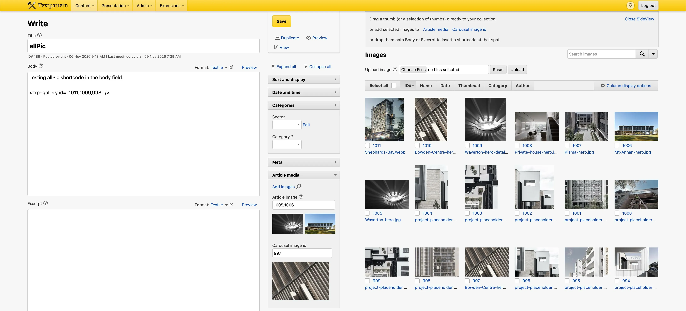

A plugin for Textpattern

Write panel, find and add images to the Article Image field or any specified custom field.Images panel opens in a SideView, providing full upload, edit and search capabilities.shortcode at that spot.shortcode in the body field.images/ directoryIf using Textpattern 4.9+, upload the all_pic.zip file using the installer in the Plugins tab.
For all versions of Textpattern, upload an unzipped version to your plugins folder using ftp, and then Load from drive in the Plugins tab.
Once installed, activate the plugin, then visit the Write panel. You’ll find an Add images link above the first of your image fields (the Article image field unless you’ve changed the order in all_pic preferences).
Visit allPic in the Preferences tab.
#article-image field only, but you can add others separated by commas eg. #article-image, #custom-1, #custom-3 etc.#article-image and #custom-n fields are supported; anything else is ignored./> tag eg. <txp::gallery or <txp::my_shortcode phew=“bar” .id attribute as this is determined by the plugin.<txp::figure . Leave it blank to use the gallery shortcode for single images too.Click on the Add images link; the Images panel will display in SideView.
Article image (or any other custom field) in the SideView headerAn empty field shows a Drag images here box to drop onto.
The image thumbs will display below their respective field:
Image edit panel will open in SideView. Once you save your changes (or replace the image or its thumbnail), the thumb updates in your article.123? tile, so it isn’t silently dropped. Remove it with its delete button.Drag a thumb (or a selection of thumbs) from SideView onto the Body or Excerpt field, and the shortcode is inserted where you drop it, eg. <txp::gallery id=“1,2,3” />. A single image uses the Single image shortcode if you’ve set one.
If you have not created a form with the same name as your shortcode, Textpattern will ignore it.
Create a form called gallery.txp in Presentation: Forms:
<txp:images id='<txp:yield name="id" />' break="" wraptag="div" class="gallery">
<figure>
<img src="<txp:image_url />" alt="<txp:image_info type="name" />"" />
<txp:evaluate><txp:image_info escape="textile" wraptag="figcaption" /></txp:evaluate>
</figure>
</txp:images>Paste the shortcode into an article body field, Save and click View. Without any css to control the layout, your images will display one above the other.
To add layout, include the following to your site’s css:
.gallery {
display: grid;
gap: 1rem;
grid-template-columns: repeat(auto-fit, minmax(300px,1fr));
/* assumes max-width is not already specified in your css */
img { max-width: 100%;}
}The images will distribute in rows depending on the width of the gallery. The same shortcode can be used in your form template:
<txp:if_article_image>
<txp::gallery id='<txp:custom_field name="article-image" />' />
</txp:if_article_image>Once you have one or more shortcodes in amongst your text copy, click within the shortcode, and a Preview button will display, allowing you to see (and re-order) your thumbs. Add more by dragging them in from SideView, or remove them with their delete buttons. Click Confirm and your shortcode is updated; any other attributes in the tag are kept.